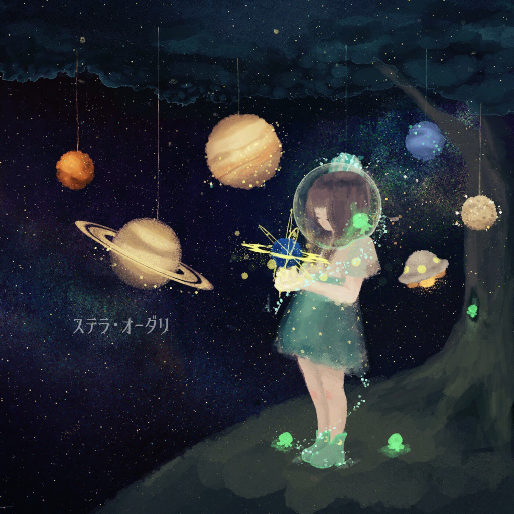

ボカロ宇宙コンピ
ステラ・オーダリ
2016.11.22
宇宙がテーマのコンピレーションアルバム。
9曲目の「πλανήτες」で参加。
惑星の公転のようにリズムが交差するピアノ曲。
ファイルの仕様の関係で「planetes」という名前に変更されている。
- 赤方偏移とゼフィランス
- 泣き虫アストラル
- 流星Lover
- gravity
- 月にうさぎ
- Starlit Sky
- 月をつかもう
- 星空遊泳
- πλανήτες
- Raining staR10s
- 君と星、プロローグ
- ラムネ流星群
- 群青流星
- ジェームズウェッブが観た宙は
- planetarium
- ハッブルと少女が視た空
- 星食べる君
- Libra
- Little Stardust
CREDIT
Organizer:山田キキ / Jakcet design:らむい / Booklet design:まつり / Illustrations:るとか, 白, まつり, エキストリーム納豆, 雪にこ, 犬神シマ / Music:ハムナレ(track 1), ともや(track 2), みるくかふぇ(track 3), MSSサウンドシステム(track 4,15), 音羽ねぅ(track 5), jp(track 6), tk(track 7),千葉ゆかり(track 8), Иagi(track 9), てむぉ(track 10), 吉田ヨシユキ(track 11), たまお(track 12), たてごと(track 13), なぱち(track 14), 山田キキ(track 16), 坂乃新(track 17), さいな(track 18), イチカ(track 19)